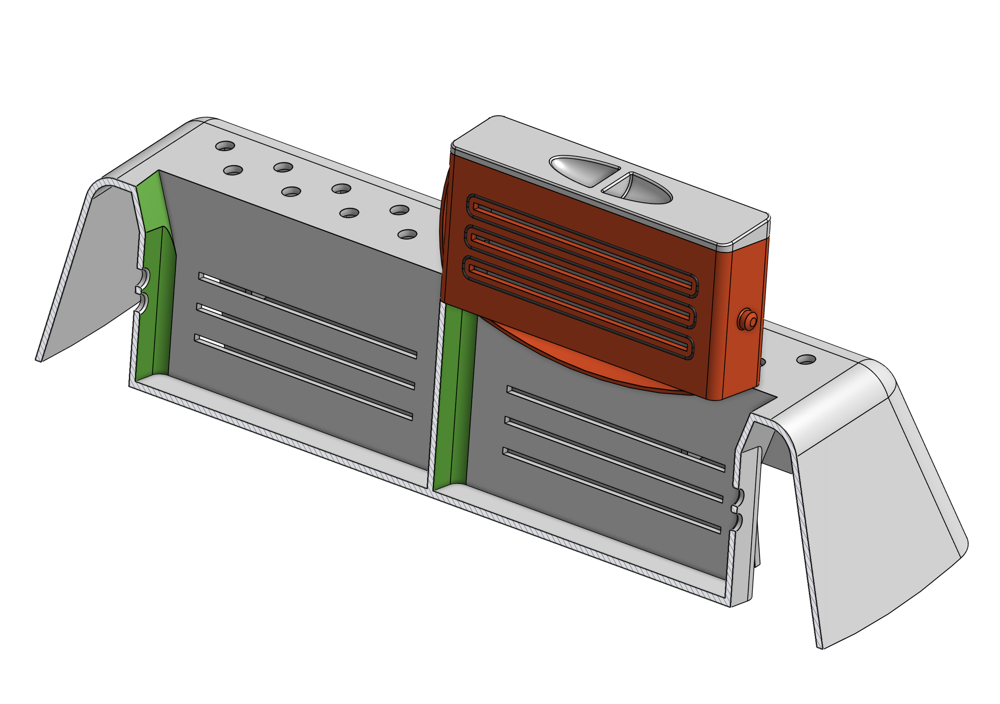
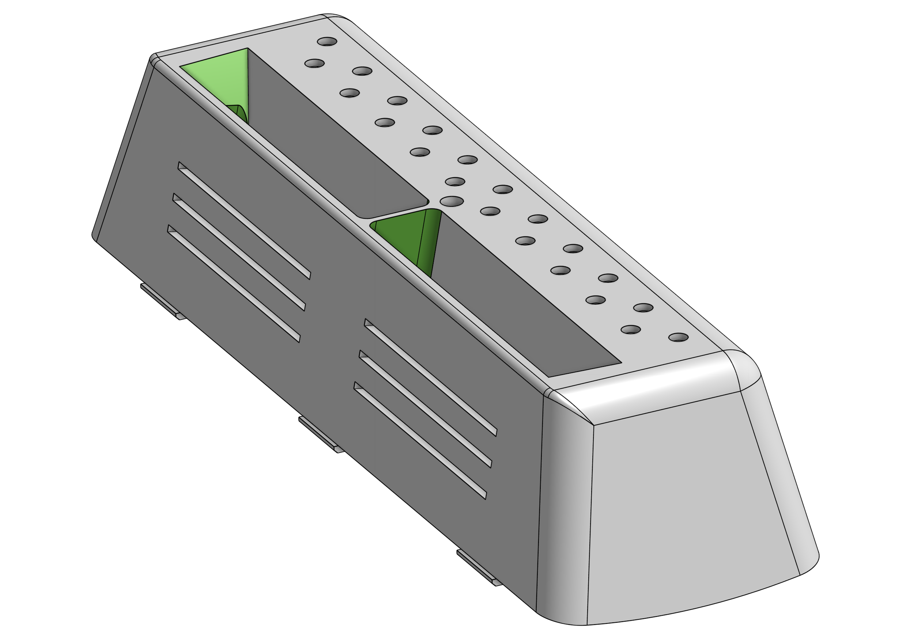
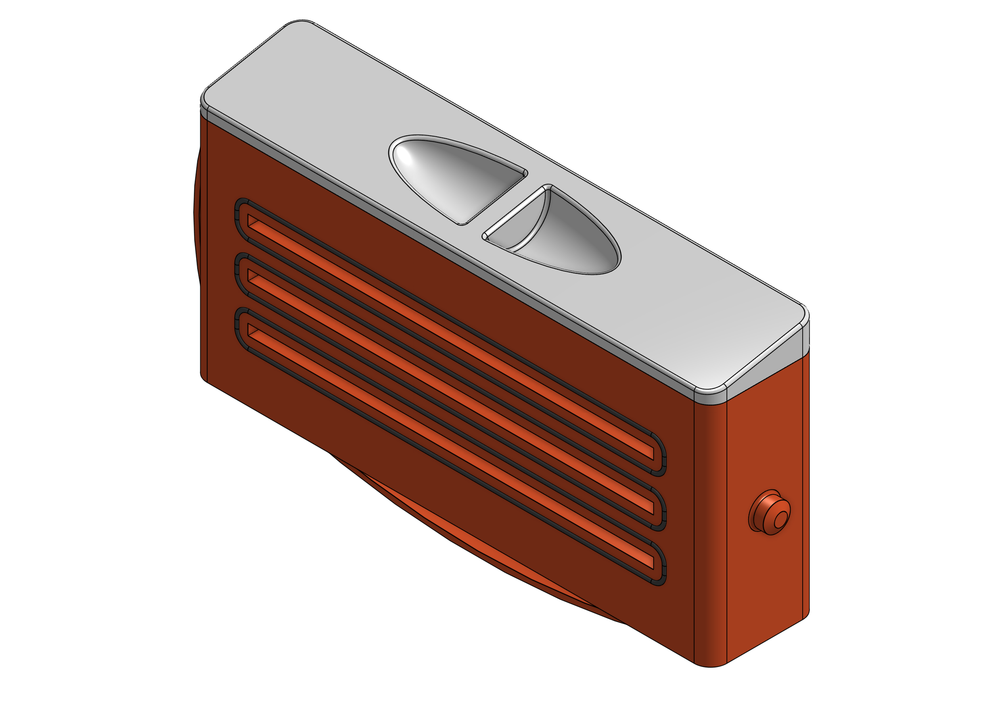
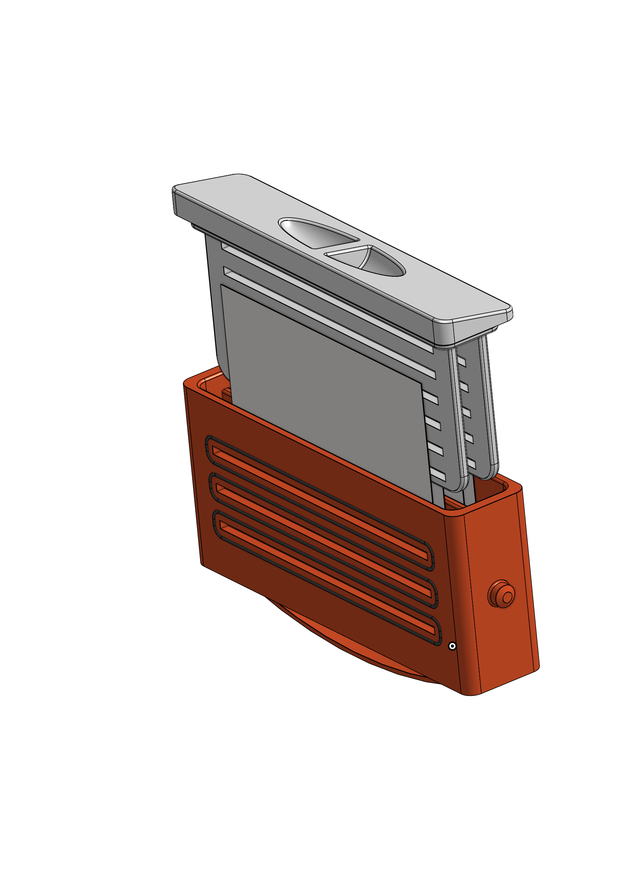
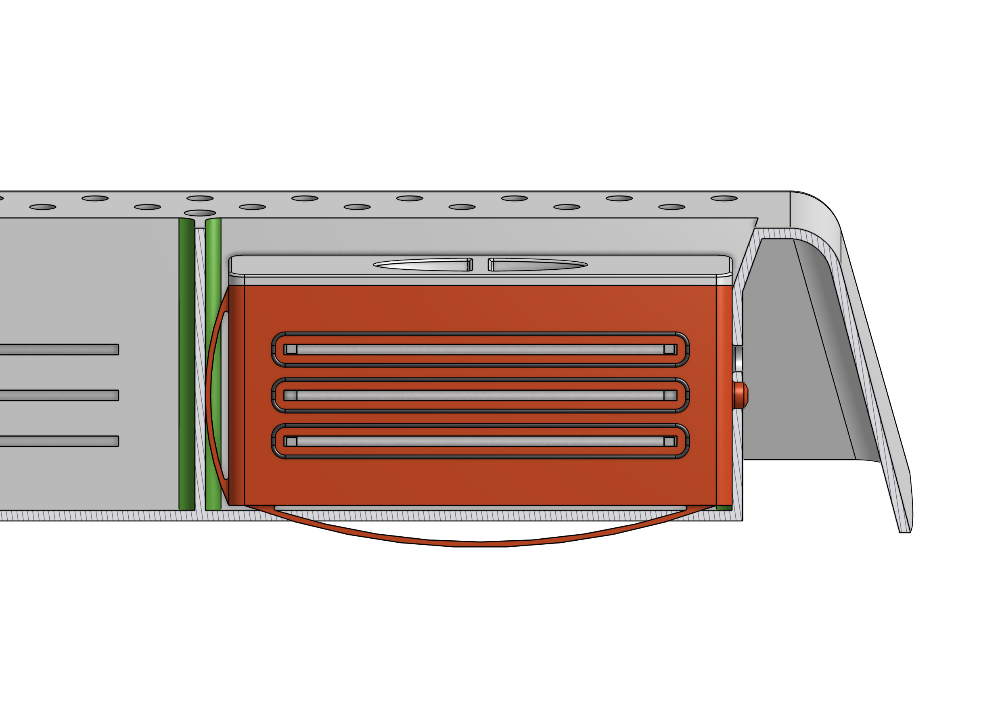
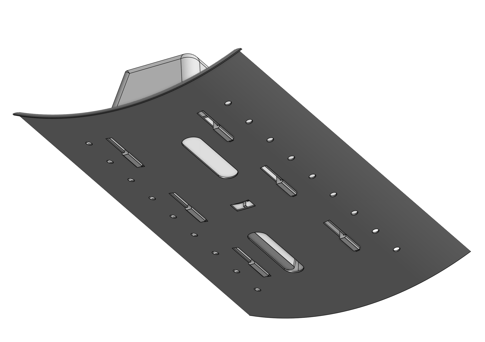

Engineering Challenge
Integrate commercial color-catching sheets into a washing-machine paddle through a safe, removable and controllable system without compromising water flow or the paddle's primary function.
Product Design · Open Innovation
An award-winning cartridge system for safer, reusable color-catching sheets
Developed with an international student team for Pro Hackin' 2024 and industry partner ROLD, ColorShield integrates a controllable color-catching cartridge directly into a washing-machine paddle.

Integrate commercial color-catching sheets into a washing-machine paddle through a safe, removable and controllable system without compromising water flow or the paddle's primary function.
The Challenge
ROLD challenged teams from Politecnico di Milano, the University of Zagreb, the University of Ljubljana and TU Wien to rethink the paddles used inside horizontal-axis washing machines.
User, market and technology research highlighted color bleeding as a persistent problem. Commercial color-catching sheets are inexpensive and widespread, but their loose placement can make them unreliable, require multiple sheets per cycle and create a risk of clogging filters.
I served as Team Leader during Phase 1 and worked with the international team across research, concept generation, selection and product definition.

Concept Development
Research
Selection Funnel
Product Architecture
The final architecture uses three main parts: a paddle with two cartridge housings, a cartridge base and a cartridge cap. Commercial sheets up to 144 × 90 mm are compacted by the internal geometry without requiring a proprietary consumable.
Slots preserve water-to-sheet contact while gaskets isolate the operational area in the inactive state. A locking pin and integrated plastic springs control insertion, activation and ejection.
The paddle measures approximately 272 × 80 × 58 mm. The cartridge measures about 103.5 × 56 × 20 mm, fitting within the paddle while preserving its water-flow and laundry-lifting functions.


User Interaction
The user folds a commercial sheet into the cartridge, closes the cap and slides the assembly into the paddle. The cartridge locks first in an inactive position, identified by a red indicator.
A second click moves it into the active position, exposes the sheet to the water flow and reveals a green indicator. A bottom spring and fingertip grip support quick removal when the sheet must be replaced.
The concept was designed for multiple consecutive washes while reducing the handling required for loose sheets and keeping the consumable separated from the laundry.

Production & Repairability
Paddle and cartridge were specified in ABS for injection molding. The estimated mass was 177 g for the paddle and 279 g for the complete assembly.
The cartridges are symmetric and interchangeable. Fragile features are concentrated on the replaceable cartridge rather than the paddle, reducing the need to replace the full assembly and supporting easier maintenance.
Production estimates ranged from approximately EUR 6–15 per piece at lower volumes to EUR 0.5–1 at 50,000 units. The shared cartridge envelope also creates a platform for future laundry addons.

Outcome
ColorShield was recognized for turning a familiar consumable into a controllable, maintainable washing-machine function while preserving compatibility with commercial sheets and conventional production methods.
The project covered the complete product-development path: collaborative research, opportunity framing, functional decomposition, concept generation, virtual prototyping, user interaction, design for manufacture, repairability and cost estimation.
Methods & Tools